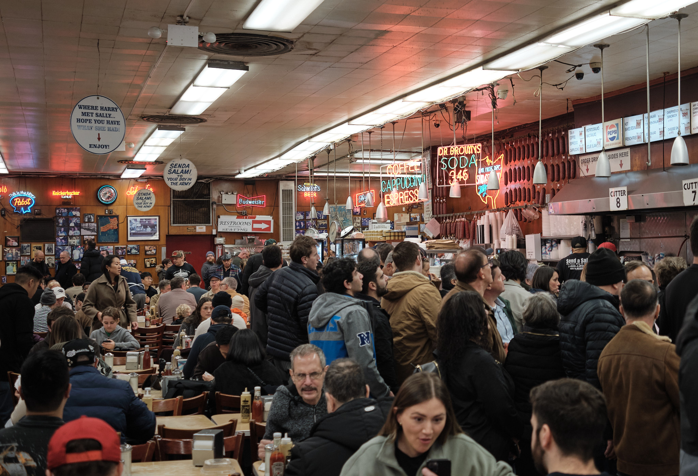
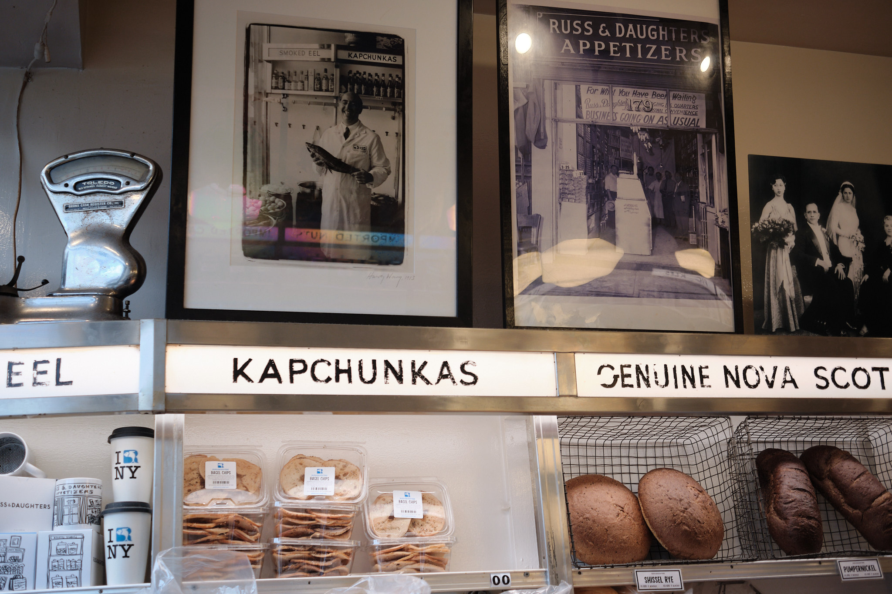
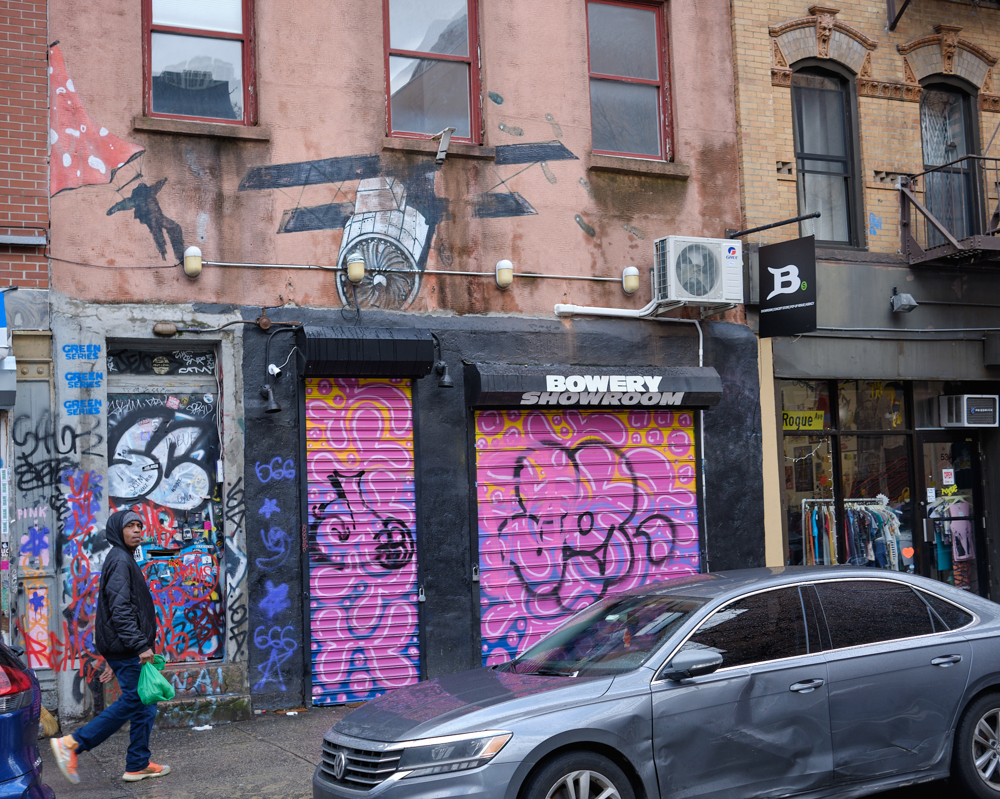
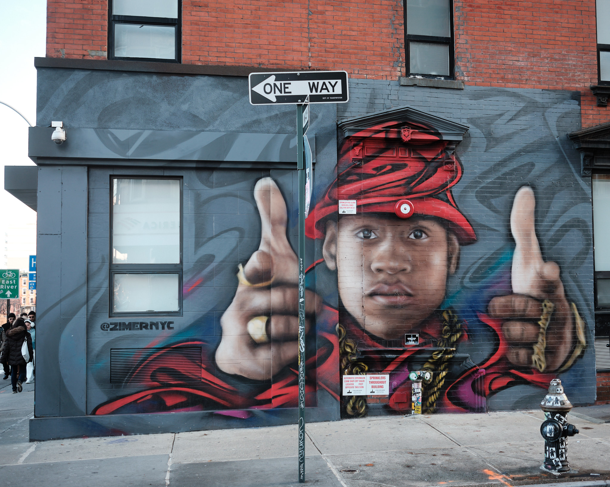
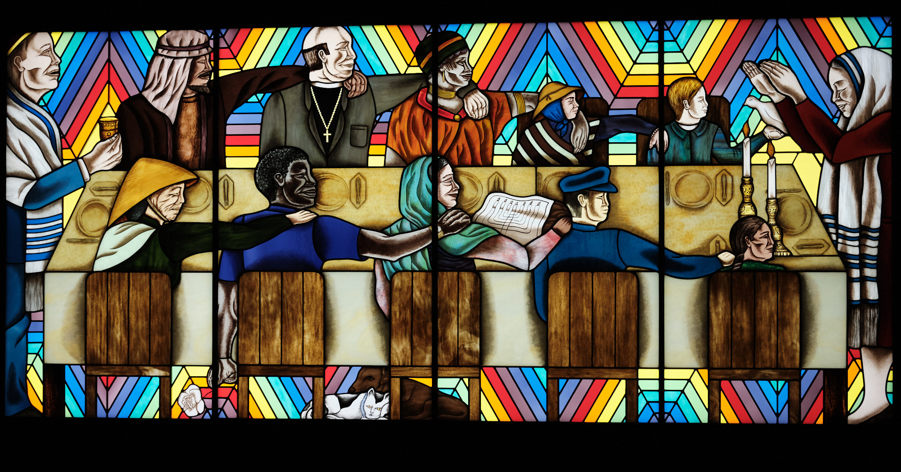
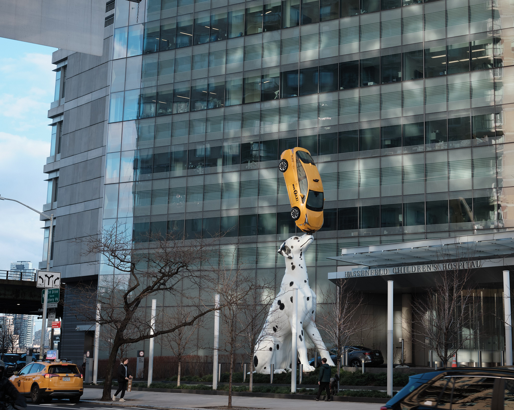
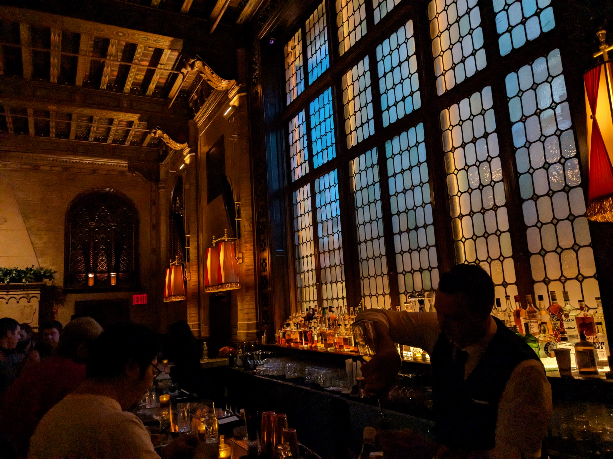

For Martin Luther King weekend, I drove up to NYC to see Mom & Paul. We had a fantastic visit. And I always love taking photos in New York, so brought my camera along.
Our first destination was the Bowery, via the trusty 15-SBS bus. In particular, we were going to the New Museum to see their Judy Chicago exhibit. When we got off the bus, we were on Houston St right near the famous Katz’s Deli. I had to go into to see a sign I remember from my childhood “Send a salami to your boy in the army.” It was still there and the deli looked exactly the same. Need some Dr. Brown’s soda with that pastrami?
There is one new accomodation to the 21st century at Katz’s however. What self-respecting deli would have a neon sign for capuccino and espresso? At least they haven’t partnered with Starbucks yet.

I also enjoyed capturing this photo inside Russ and Daughters. I like the old photos, the scale, and fading but spotless signs. But we didn’t get anything to eat in either place.

The Bowery is had some colorful grafiti. We walked past the “Bowery Showroom.” I am not sure what was inside, but the outside was pretty wild.

I liked this mural, too.

When I was in New Mexico, I had stopped in the “Through the Flower” gallery to learn about the work of the artist Judy Chicago and her “Holocaust Project”. While in NM, the gallery staff shared that her major exhibits were in New York. Mom and I were very impressed with the New Museum which focuses on Judy Chicago’s work across four floors. The work alternates between bright and dark, explores many feminist themes, and always has a message. She’s a Jewish artist and here is the “Rainbow Shabbat,” the concluding image from her Holocaust Project.

After seeing so much art, it was nice to take in the wonderful skyline view from the roof of the New Museum.
Back near the apartment, I loved this statue outside the children’s hospital. I can imagine kids somewhat excited to vist the Dalmatian with the Taxi, even though they know that means they are going to the hospital.

I also took photos on a later walk around the area near Mom and Paul’s apartment. I love walking inside Grand Central Station, pictured here. It still looks grand!
There’s a reason they call the cocktail a “Manhattan” and the Campbell Apartment seems like the perfect spot to explore a perfect manhattan. But I didn’t have one. Instead I walked past the NY Public Library and Bryant Park to Times Square. Then down Broadway to Herald Square and finally back to the apartment. A great walk in New York.
